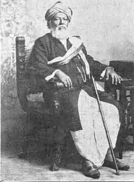

Kalaprapurna Venkataraya Sastry
BY G. V. SUBBARAMAYYA, M.A.

Kalaprapurna Venkataraya Sastry
The life-career of Kalaprapurna Vedam Venkataraya Sastry Garu1 covering over seventy years has been so rich in varied experiences, and his genius is so many-sided, that it is impossible to deal adequately with either the one or the other within the brief space of an article. What I propose to do, therefore, is simply to bring out the most striking features of the genius and the personal character of the Kalaprapurna.
A LITERARY HERCULES
What impresses us most with regard to his genius is its stupendous, almost superhuman dimension. He is truly a literary Hercules, perhaps the last of the giants’ race. This is seen not only in the mass of his output, but in the very nature of his undertakings. The editing of more than two dozens of leading classics in Telugu and Sanskrit with the most exhaustive notes and commentaries, the translation of some seven first-rate Sanskrit dramas and of ‘Katha Saritsagaram,’ and the composition of three original plays and some ten other Telugu works, are for sheer mass sufficient to impress one with the magnitude of the Kalaprapurna's genius. But our wonder must be considerably enhanced when we learn that the above include many a work which singly might have been the life-achievement of an individual, –nay of a whole, academy–and might be enough to ensure its author's immortality. Such are, for instance, his commentary on ‘Megha Sandesam,’ the editions of ‘Naishadham’ and ‘Amuktamalyada,’ the ‘Prasanna Raghava Vimarsha’ and at least one of his original dramas, the ‘Prataparudriyam’. His genius is cut out for great achievements; and his ‘giant-nerve’ does not feel satisfied unless in grappling with the mightiest issues. The editing of the toughest classic such as ‘Amuktamalyada,’ the writing of a ten-act play ‘more epic than drama,’ or the valiant fighting single-armed against a whole army of pundit-opponents, alone affords proper exercise for his high talents. The rest is for him a mere child's play. We have it on his own authority that he wrote many translations and even original works of lighter vein by way of recreation and relief in the intervals of serious pre-occupation with a principal concern. A bubble of a lyric, a sentimental short-story, a sketchy farce, a rambling causerie are not in his way. Only a Colosseum would his art like to construct or reconstruct; only an Ilium would his shafts care to demolish.
DEPTH OF LEARNING
Another striking feature of his genius is the depth and soundness of his learning, and what go with it, an exquisitely refined taste and the keenest critical sensibility. He began by mastering Sanskrit, both grammar and literature, and thus equipped, he took up Telugu and cultivated it as widely and intensively as the former. His splendid success as an author and critic may be accounted for chiefly by two factors. One is his right procedure in first acquiring a thorough knowledge of Sanskrit grammar and classics, which is a necessary pre-requisite and sure foundation of all other knowledge. The other factor is his acquisition of a sound education in English. He confessed to me many a time that for his skill and refinement as a teacher, author and critic, he owed not a little to his English learning. He is by no means a blind admirer of old methods and models. Nothing is dearer to his heart than to assimilate whatever is good and beautiful in Western culture. Only he insists upon a foundational knowledge in whatever subject you may have chosen. He would himself never agree to play the dilettante, nor would he allow others to do so. The well-known definition of genius as "an infinite capacity for taking pains" is fully borne out in his case. He was thus best fitted to give the right lead in criticism or creative art, by upholding good taste, propriety and sound critical canons in everything, and by opening up new, fruitful avenues in literature. At a time when the decadent ‘Prabandhic’ school banished all higher imagination, originality, naturalness and truth from Telugu Literature, our Kalaprapurna entered the field and rendered yeoman service by setting up the right standards. In prose, poetry and drama, he has, by his example and precept, fought ruthlessly against servile imitation, sensuality, low taste, and the stereotyped, artificial diction set up as the fashion by the ‘Prabandhic’ cult. Like so many other innovators, he has had to incur great unpopularity, but he has braved it quite heroically and is now rewarded with the satisfaction of knowing that his ideals of art and his critical opinions have been fully vindicated by time. He has moreover an amazing power of penetrative insight
into the poet's heart (‘Kavi hridayam’), which has stood him in very good stead, in revising old, unsatisfactory texts of ancient authors, and commenting upon them. I am not exaggerating when I state that but for his labours in this direction, many invaluable Telugu works, which he has practically recreated for us, would have perished unregarded or unknown. Though literature as his chosen subject has been the main field of his devoted labours, his marvellous industry, sympathetic imagination and penetrative insight have borne equally beneficial results in other fields as well, into which circumstances compelled him to stray. The controversies concerning the Social Reform movement forced him to explore the ‘Smrities’ and the ‘Dharma Sastras,’ so that we have from his pen, the most authoritative exposition of the Shastraic viewpoint. The commentary upon the ‘Amuktamalyada’ a work mainly devoted to the extolling of the Visishtadvaitic philosophy, necessitated a deep study of the Vedas, the ‘Brahma Sutras’ and the ‘Upanishads’ with their different ‘Bhashyas’; and thanks to his labours, we are furnished with the most lucid interpretation of the different systems of Hindu philosophy, with an amazing wealth of quotation and reference inaccessible even to the professional philosopher. These and other commentaries he undertook have familiarised him, and through him the readers, with the most ancient authorities on Indian Politics, Economics, Ethics, Astrology etc.
ORIGINALITY AND INDIVIDUALITY
Another remarkable feature of our Kalaprapurna's genius is his extreme originality and individuality which are the obverse and reverse of the same thing. His individuality is best illustrated in his style both in prose and verse, which quite fulfils the oft-quoted definition that "style is the man." Succinctness, precision, transparent lucidity, avoidance of superfluous ornament, and the consequent strength and beauty are the chief merits of his style. It is like a highly polished mirror for the complex hues of thought. It is like the pole-star whose identity you never mistake. He is not content in his plays with merely dramatising the materials handed to him by legend or tradition, and in his comments and criticisms with merely standing by the classical rules. In the one case, he invariably develops the plot in his own way, and either creates new characters, or elaborates or strikingly modifies the old ones. In the other, he seeks to apply the classical rules to modern conditions of art, and attempts a rapproachment between the Western conceptions and ours. Either way, we unmistakably see his originality and individuality at work. In his ‘Prataparudriyam’ his ‘Yugandhar’ and the washerman are brilliant elaborations of faint figures furnished to him by crude tradition, while ‘Chekumuki Sastry’ and ‘Vidyanadha Kavi’ are his own. Besides, the conception and execution of that marvel of a plot which might do credit even to Ben Jonson, are also his own. His advocacy of ‘gramyam’ (the spoken dialect) for low characters in drama, shows his skill in interpreting old rules and conventions, so as to find in them a true aid for the solution of modern problems. He has not only kept himself abreast of the current of literary culture, but fed it with his own tributaries. In every field in which his genius has ranged, it has not only pushed to the utmost bounds of knowledge, but advanced the bounds themselves perceptibly. Of him indeed, it may be truly said that "he touches nothing but he adorns it."
HIS GIFT OF HUMOUR
As another striking feature of the Kalaprapurna's genius, I would mention his gift of humour. If his learned lectures are able to attract vast crowds and keep them spellbound, if his dramas containing profound art and psychology are such a phenomenal success, if his subtle expositions of points of purely academic interest are so widely read and richly relished, if, in short, the weight of his erudition does not press him down but sits upon him lightly and gracefully like a flower, it is not a little due to his humour. While it adds poignancy to his satire, it imparts an agreeable flavour to all that he says; it acts as the motley beside the tragic hero; it not only relieves the strain of following up an abstruse discussion, but heightens our interest in the same. It no doubt makes his attacks as in ‘Prasanna Raghava Vimarsha’ all the deadlier in their effect upon the victim, like poisoned arrows. But how much less attractive would his ‘Prataparudriyam’ become, in the eye of the common people at any rate, without the humour of the washerman and the sepoys? Who could muster patience and bear the strain of breaking into the impregnable fastnesses of that formidable ‘Amuktamalyada,’ or of treading upon the thorns and briers of Shastraic controversy, but for the beckoning flashes of the critic's wit and humour with which they are interspersed? Who would agree to swallow the bitter pills of grammar and formal rhetoric but for their coating of his sugared humour? To sum up, his humour gives his speeches and writings their peculiar quality; it forms the main source of their irresistible charm; and thus, it serves to bridge the gulf between the unapproachable learning of the Kalaprapurna, and the common sense of the laity.
Before concluding this part of my article, I must confess that however long I may draw the list of our Kalaprapurna's qualities, something still remains unsaid and inexpressible, and that genius being a divine gift, baffles all attempts at exhaustive analysis. I shall therefore content myself with saying that the Kalaprapurna's genius comprises the above qualities and that ‘enlivening spark’ which fills the gap, and fuses them all into one, and which goes by the equally mystic name of ‘Personality.’
AS A TEACHER
Coming to the personal traits of the Kalaprapurna, I think I will not be wrong in mentioning first his excellence as a teacher. Not only did he adorn the teaching profession for more than a quarter of a century, but he realised his highest joy, nay, he discovered his very soul, in teaching. He had in him the making of the best teacher. He possessed the gifts of lucid and arresting presentation, unfailing memory, unbounded resourcefulness, irrepressible humour, and the capacity of unrelenting discipline. A great genius as he was, he never spared any pains to be of use to his students. He had and has a genuine affection for youth, perhaps natural to a poet, and even now, though retired, semi-blind, decrepit, and fallen on evil times, he cannot pass a day without surrounding himself with boys and ‘old boys’ and leading them gently into the ever-fresh Elysium of Letters. His striking success as a teacher may be measured by the deep, abiding love, bordering on adoration, which his old and present pupils without exception cherish for him. Along with a great English poet, our Kalaprapurna would declare: "I wish to be regarded as a teacher or as nothing."
Another feature which goes with his skill in teaching and in great measure accounts for it, is his passion for study. As no one can rule who cannot obey, no one can be a great teacher, who is not at the same time an earnest student. Not only does the Kalaprapurna never weary of poring over his favourite classics, but he welcomes with avidity the latest offerings to the Muse. When recently I expressed incredulous surprise at his regret that owing to his failing eye-sight he could no more read ‘Sakuntala,’ he emphatically asserted, "Yes, I mean sincerely, my real study of that work is just beginning." He has however no liking for aimless, idle reading for its own sake. The same book he may read again and again, but each time with a definite purpose. A couple of years ago, he was reading the Telugu ‘Bharatam’ I do not know after how many times, -and he informed me that he was studying it from the view-point of grammar. Like Browing's ‘Grammarian,’ he would not mind devoting a whole life to laying, by incessant study, the foundation of future knowledge; his faith in the continuity of the Soul's progress is as lofty as that Grammarian's.
AS CONVERSATIONALIST
Having so long fed upon the ambrosia of our Kalaprapurna's conversation, I cannot here omit to eulogise his greatness as a talker. His company and talk put me in mind of the immortal meetings of the Literary Society, presided over by another Doctor of Letters, very like our Kalaprapurna in many respects. Only a Boswell is wanting to give a faithful picture of this mighty scholar, unbending, mirthful and reminiscent. A literary dictator like Dr. Johnson, he too is revered and listened to with rapt attention; his ever-new jests bear repetition for all time; his anecdotes are numberless; his manner of narrating them makes the scene live before you again; and you witness too, a ‘terrible buffetting’ of social reform and literary imposture. But behind them all, is a like gift of laughter, of heartiness and geniality, arising from a simple, believing heart. Of him also, it may be said that "he has nothing of the bear but his skin." From a distance, he may be dreaded as the ‘king of the beasts’; but at close quarters, he is loved as a ‘friend, philosopher and guide.’
At this point, I wish to clearly state that his opposition to the old order of social reformers ought not to be understood to mean that he was an orthodox bigot and obscurantist. He told me many times that he felt called upon to measure swords with the social reformers, not because he was opposed to all reform, but as he found them tearing the scriptural passages out of their context, torturing them to yield a meaning suited to their purpose, and in many cases, guilty of literary dishonesty. He was concerned with pointing out that the passages in question could never yield the meaning wanted by the reformers; if in this particular, he found himself in agreement with the blind Sanatanists, it was only an accident. On the other hand, he is at one with all those who frankly maintain that the old Smrities will not do under the changed conditions of modern life, and that the illuminati of today must put their heads together to so modify them as to bring our nation into line with the advanced communities of the world. He went further and told me that if such a ‘Parish ad’ could be formed, he would gladly contribute his mite to make it a success. Only he cannot approve of the philosophy of every individual doing what he likes. He is afraid that liberty in that case would degenerate into license, and that society would be disintegrated in no time.
LOVE FOR TELUGU
In conclusion, I should like to mention one aspect of our Kalaprapurna's character, that is not often fully comprehended. If only he wished, he could have done much of his work in Sanskrit and gained an all-India fame, if not world-renown. If he is little known outside the Andhra Province, it is because he has chosen the medium of the Telugu language, and has published even his Sanskrit works in the Telugu script. This sacrifice on his part has been as deliberate as it is heroic. I need not say how much to this circumstance we owe the dissemination of culture among our Andhra brethren of whom only a very small percentage knows Sanskrit and the nagari script. His personal loss has thus been the country's gain; and in thus sacrificing his personal preferment, he has shown himself a genuine lover of the Andhras, a true patriot.
FALLEN ON EVIL DAYS
I wish to end with a prayer and an appeal. Like Tennyson's ‘Ulysses,’ our Kalaprapurna has already ‘become a name.’ His life-task has been accomplished. A high pedestal has been already reserved for him in the Temple of Immortality. Though he is "not now that strength which in old days moved earth and heaven," there is still in him that grey spirit,’
"Yearning in desire,
To follow knowledge like a sinking star,
Beyond the utmost bound of human thought."
May the Almighty therefore spare him for us for many years more, to serve as a living fountain-head of inspiration and enlightenment to the rising generation, if not to deck the Goddess Saraswati with some more brilliant ornaments of his making! May this evening of his life be attended by all happiness and serene tranquility!
It must be pretty well-known, that like the great English poet Spenser, and our own Sreenadha, the Kalaprapurna in his old age is forsaken by the Goddess Lakshmi, never too kind to him before, and is subject to the attentions of her Elder Sister2. This is the price he is now paying for the robust independence that has throughout distinguished his life. All true lovers of culture, and the Andhras in particular, have therefore a sacred duty to discharge. There have been too many cases of the dear and the great being encumbered with post-mortem honours and costly memorials but being cruelly neglected while alive. May we escape from this charge in the present instance at least, by contributing with a free hand to place our Kalaprapurna above want, and thus making him feel that his services and sacrifices have been duly appreciated!
1
It is quite laudable that the ‘Triveni’ should invite contributions giving accounts of the great living authors who have achieved classic fame in Telugu Literature; and I particularly thank the Editor for giving me this opportunity of paying my humble tribute to one, to whom for themost part, I owe what little culture I possess in Telugu and Sanskrit.
2
The Goddess of Evil Fortune.